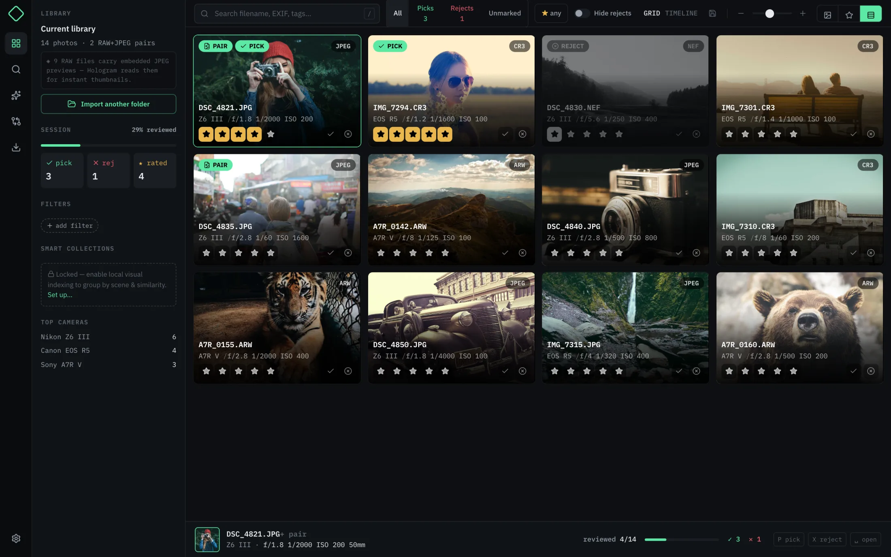
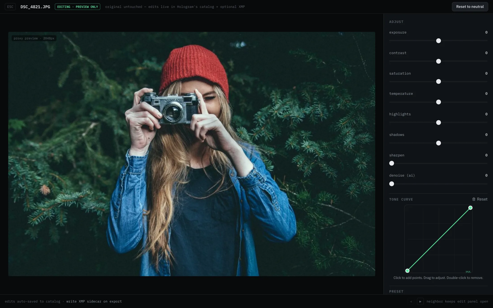
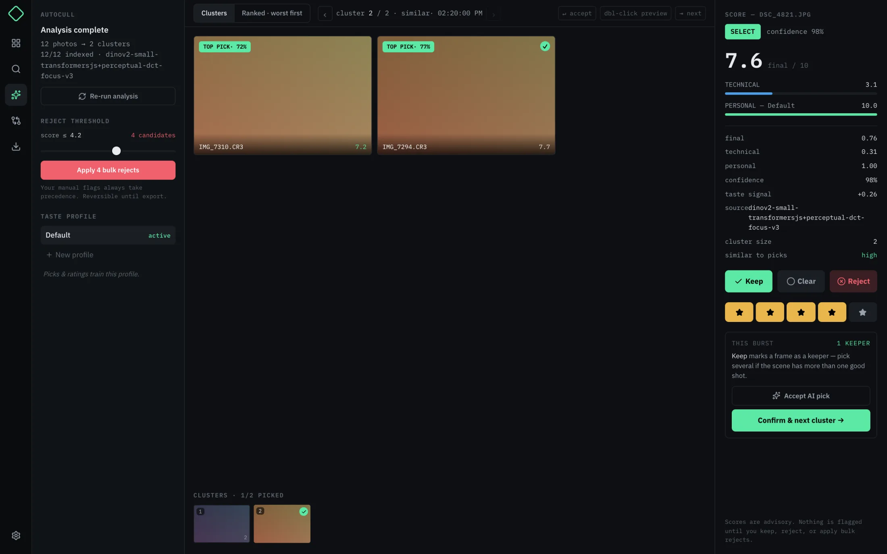

Point at a folder.
Thumbnails stream in progressively. RAW+JPEG pairs become one photo, never a pile of duplicates.
Local-first photo workflow / macOS first
Hologram is the fast, keyboard-first workspace for photographers who want RAW+JPEG control, deep EXIF intelligence, and none of the cloud-shaped baggage.
Open source · Active development · Your originals stay untouched


Clarity over clutter
Search every useful field. Compare nearby frames. Toggle RAW and JPEG. Inspect full EXIF. Make preview-only adjustments. The interface stays dark, dense, and out of the photograph's way.
Deep EXIF searchCamera, lens, aperture, ISO, dates, tags, and more.
True compareSide-by-side frames, 100% detail, fast neighbor navigation.
Non-destructiveAdjust a proxy, import presets, never touch the source.
One shoot. One uninterrupted flow.
Thumbnails stream in progressively. RAW+JPEG pairs become one photo, never a pile of duplicates.
Pick, reject, rate, and auto-advance from anywhere. The mouse is invited, never required.
Folder, ZIP, Lightroom structure, RAW, JPEG, or both—with XMP sidecars ready for the next tool.
intelligence with boundaries
Hologram groups bursts, scores technical quality, and learns from the picks you make—all on your machine. Every recommendation is inspectable. Every final decision is still yours.
Manual flags always win.

Built on a few stubborn beliefs
Your library remains a set of normal files and folders. Hologram adds a faster way to understand it.
Recommendations show their work. Scores are signals to inspect, not commands to obey.
Keyboard-first interactions preserve the rhythm that gets a thousand-frame shoot down to the story.
For the ones who care how the shot was made
Free and open source · Builds for macOS, Windows, and Linux